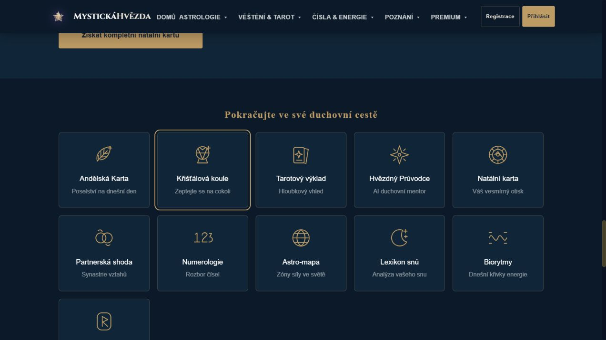

Lokální kontrola · 14. října 2026 · nenasazeno
Jemná linka, zlato a jasný význam
Jedna sada vlastních SVG ikon navazuje na naše tarotové ilustrace. Odkazové ikony nemluví místo názvu služby; čtečky je přeskočí.
Sada 51 ikon
angel
crystal
tarot
star
chart
partner
numbers
globe
dream
wave
rune
book
pen
energy
flame
wolf
hourglass
spectrum
eye
compass
leaf
flower
gem
heart
search
balance
home
cycle
gift
seed
yin
people
spiral
strength
bird
tooth
storm
snake
coffin
pregnancy
brokenHeart
mask
lock
check
error
info
warning
dot
music
camera
facebook
Nový blok z původního screenshotu
